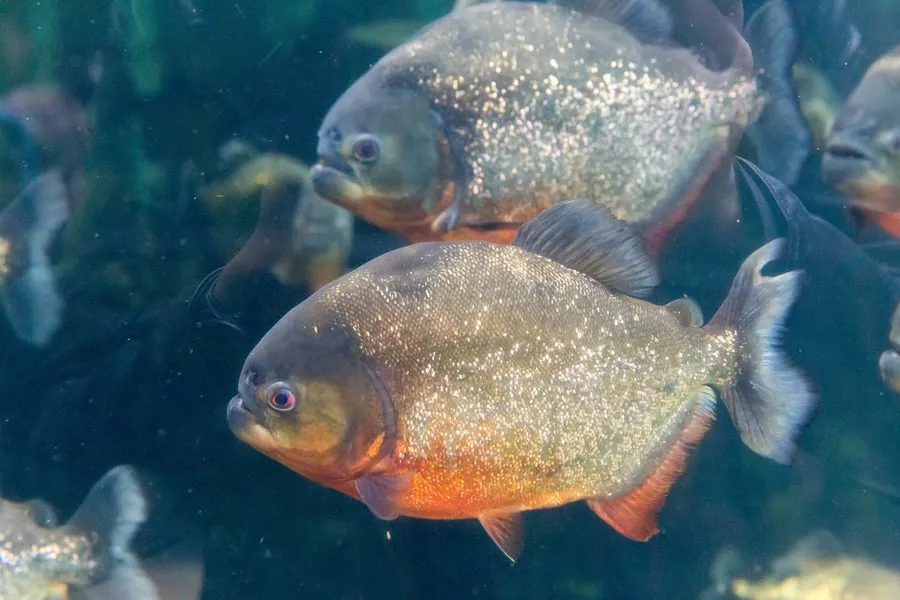

鱼类 · 动物界
红腹锯鲑脂鲤 Pygocentrus nattereri

南美亚马孙河流域的肉食性鱼类，腹部呈鲜艳的橙红色，牙齿锋利、常成群活动，因影视作品被塑造成“食人鱼”的典型代表。
- 分类
- 门脊索动物门纲硬骨鱼纲目脂鲤目科锯鲑脂鲤科属锯鲑脂鲤属
- 栖息环境
- 南美河流、湖泊、泛滥林和沼泽的缓流水体，喜浑浊、水草丰富的水域
- 地理分布
- 南美洲亚马孙河、奥里诺科河、巴拉那河等水系，包括巴西、秘鲁、委内瑞拉和阿根廷北部
- 保护级别
- 暂无评估
物种志
红腹锯鲑脂鲤体呈卵圆形、侧扁而厚实，头大吻短，下颌突出，上下颌各有一排三角形的尖牙，咬合力量很强。腹部呈橙色至鲜红色，背部灰绿或黑灰色，体侧散布着细小的银白色斑点，鳍的颜色较深。成鱼体长一般 20–30 cm，最大约 40 cm。
它分布于南美洲的亚马孙河、奥里诺科河和巴拉那河等水系，生活在缓流、浑浊的河流、湖泊和泛滥林水域中。红腹锯鲑脂鲤是肉食性鱼类，捕食鱼类、甲壳类、昆虫和水生无脊椎动物，也吃腐肉，常结成群体活动，遇到受伤的猎物时会群起而攻。繁殖期雌鱼在水草根系或沙床上产卵，雄鱼负责护卵。影视作品常把这种鱼描绘成凶残的“食人鱼”，实际上它主动攻击人的情况很少，多发生在食物匮乏或受到刺激时。它作为观赏鱼被引入多个国家，逃逸后在部分热带水域形成野外种群。目前它没有IUCN 的正式评估，中国也未将其列入国家重点保护野生动物名录。
形态与习性
- 食性肉食性，捕食鱼类、甲壳类、昆虫，也食腐肉
- 体长一般 20–30 cm，最大约 40 cm
- 体重常见 0.5–1.5 kg
- 繁殖雌鱼在水草根系或沙床产卵，雄鱼护卵
- 牙齿上下颌排列三角形尖牙，可咬断鱼鳍和小骨头
- 习性常结成群体活动，遇到受伤猎物时群起攻击
趣味知识
- 红腹食人鱼只是俗称，它其实属于脂鲤目，与人们熟悉的灯鱼是近亲。
- 它的下颌力量很大，能一口咬断鱼鳍甚至小鱼的骨头。
- 电影里的“食人鱼”形象被大幅夸张，野生个体主要以鱼类和腐肉为食。